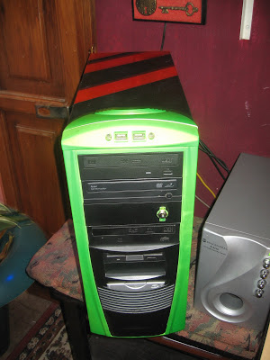
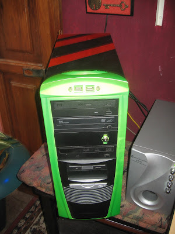
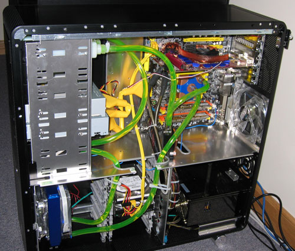
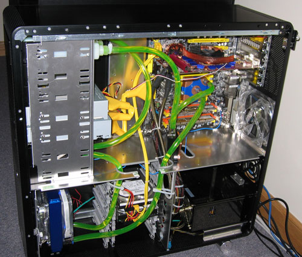

Has visto alguna vez un PC MOD?
Seguro que si, pero yo no me había enterado de su existencia sino hace unos 5 meses atrás. Por si alguien no sabe a que me refiero pueden ver un ejemplo aquí:

Decidí hacer mi propio MOD, bastante rudimentario y casero pero creo que no completamente despreciable:
 
 
Para describir a vuelo de pájaro en lo que consiste (que es evidente):
- Hice un corte en un lateral
- Pinté la torre de forma algo sicodelica y llamativa
- Coloque unos cuantos LEDs de colores dentro
- En el ventilador lateral: cubrí las aspas con papel aluminio y luego introduje más LEDs.
Mientras buscaba por la red ideas adicionales, me topé varias veces con los kits de refrigeración liquida, no lo pude implementar por la dificultad de su fabricación casera y por que los kits adquiribles no creo poder encontrarlos en mi ciudad.
 

Desistí completamente de ello pero siempre con la intriga de como funcionaban estos, pues el liquido no podría ser nunca agua!, a la mínima fuga el PC haría BooM, supuse que debían usar un liquido dieléctrico y fue aquí cuando mis ojos empezaron a brillar!, me explico….
Si conociéramos ese o algún otro liquido dieléctrico, esto es: NO conduce la electricidad –> NO hace corto circuito –> NO hace boom; Podríamos directamente sumergir el PC entero en una gran cantidad de este, ese si que sería enfriamiento liquido!!! Y así comienza la odisea.
Evidentemente no podemos sumergirlo en agua, pero que tal agua destilada, esta es en extremo pura y no contiene minerales, esto significa que NO conduce la electricidad, perfecto!!! Sumerjamos la PC en agua destilada!! … NO!!! Hay varios problemas.
Para empezar, al entrar el agua destilada en contacto con partículas de polvo, y posibles minerales que pudiese contener alguno de los componentes, esta de inmediato se convertiría en conductora y aún en la suposición idealizada de que esto no llegara a ocurrir, el agua destilada sigue siendo (H2O) y inevitablemente el oxigeno reaccionaria con el cobre, oro, etc de los componentes, estos generarían óxidos y el PC en general se corroería!!, habrá que buscar otra manera.
Tras mucho tiempo de pensar y de que muchos líquidos infructuosos para el cometido cruzaran por mi mente, de repente mientras me disponía a dormir, por azar de el destino una idea choco en mi frente como insecto en parabrisas!!: aceite vegetal!. Si, el típico aceite de cocina que se usa para freír, al rato me di cuenta que aunque serviría perfectamente bien, al aceite vegetal al ser un compuesto orgánico se descompondría al cabo de un par de meses quizás. Pero no hay problema, que tal si usamos aceite de motor!, este nunca se dañaría.
Pues listo!, lo que tenia que hacer a continuación es construir una pecera, meter los componentes de mi PC dentro y llenarla con aceite de motor.
En este punto empecé a indagar sobre lo que haría y como lo haría, para empezar, el aceite mineral en la cantidad que lo necesito no lo encontraré en mi ciudad, así que definitivamente usare de motor, y en cuanto a la pecera en este mismo momento la estoy diseñando para que use el mínimo volumen de aceite necesario (reducir costos) y cortando el vidrio que emplearé (de unas viejas repisas).
Una vez tenga la pecera haré un nuevo post para reportar el avance de este proyecto.